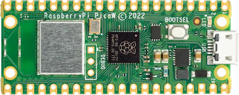
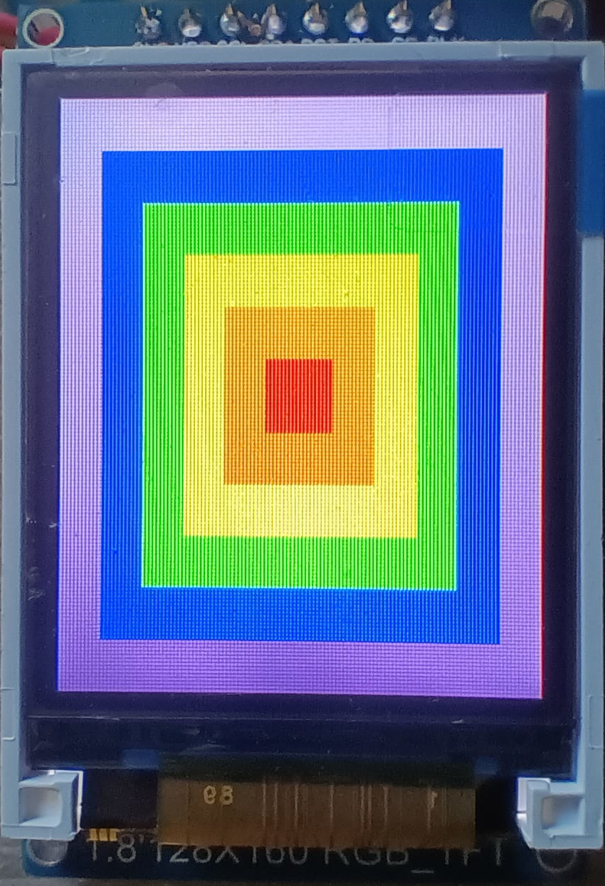

Raspberry Pi Pico W
The Raspberry Pi Pico is a general purpose board supplied by Raspberry Pi. The W variant adds built in WiFi and Bluetooth communications.

Features
RP2040 microcontroller chip
Dual-core ARM Cortex M0+ processor, flexible clock running up to 133 MHz
264kB of SRAM, and 2MB of on-board Flash memory
Castellated module allows soldering direct to carrier boards
USB 1.1 Host and Device support
Low-power sleep and dormant modes
Drag & drop programming using mass storage over USB
26 multi-function GPIO pins
2× SPI, 2× I2C, 2× UART, 3× 12-bit ADC, 16× controllable PWM channels
Accurate clock and timer on-chip
Temperature sensor
Accelerated floating point libraries on-chip
8 × Programmable IO (PIO) state machines for custom peripheral support
Built in WiFi radio (Infineon CYW43439)
Wireless Communication
The on board Infineon CYW43439 supports 2.4 GHz WiFi 4 communications (802.11n), WPS3 and SoftAP with up to four clients.
Pin Mapping
Pin |
Signal |
Notes |
|---|---|---|
1 |
GPIO0 |
Default TX for UART0 serial console |
2 |
GPIO1 |
Default RX for UART0 serial console |
3 |
Ground |
|
4 |
GPIO2 |
|
5 |
GPIO3 |
|
6 |
GPIO4 |
Default SDA for I2C0 |
7 |
GPIO5 |
Default SCL for I2C0 |
8 |
Ground |
|
9 |
GPIO6 |
Default SDA for I2C1 |
10 |
GPIO7 |
Default SCL for I2C1 |
11 |
GPIO8 |
Default RX for SPI1 |
12 |
GPIO9 |
Default CSn for SPI1 |
13 |
Ground |
|
14 |
GPIO10 |
Default SCK for SPI1 |
15 |
GPIO11 |
Default TX for SPI1 |
16 |
GPIO12 |
|
17 |
GPIO13 |
|
18 |
Ground |
|
19 |
GPIO14 |
|
20 |
GPIO15 |
|
21 |
GPIO16 |
Default RX for SPI0 |
22 |
GPIO17 |
Default CSn for SPI0 |
23 |
Ground |
|
24 |
GPIO18 |
Default SCK for SPI0 |
25 |
GPIO19 |
Default TX for SPI0 |
26 |
GPIO20 |
Default TX for UART1 serial console |
27 |
GPIO21 |
Default RX for UART1 serial console |
28 |
Ground |
|
29 |
GPIO22 |
|
30 |
Run |
|
31 |
GPIO26 |
ADC0 |
32 |
GPIO27 |
ADC1 |
33 |
AGND |
Analog Ground |
34 |
GPIO28 |
ADC2 |
35 |
ADC_VREF |
Analog reference voltage |
36 |
3V3 |
Power output to peripherals |
37 |
3V3_EN |
Pull to ground to turn off. |
38 |
Ground |
|
39 |
VSYS |
+5V Supply to board |
40 |
VBUS |
Connected to USB +5V |
Other RP2040 Pins
GPIO23 Output - WiFi controller enable. GPIO24 I/O - WiFi controller data line. GPIO25 Output - WiFi controller chip select line. GPIO29 Output - WiFi controller clock line. ADC3 Input - Analog voltage equal to one third of VSys voltage.
Note: ADC3 and GPIO29 share the same pin on the RP2040. If the GPIO25 line is held high (Wifi controller NOT selected) then a voltage equal to one third of the VSys voltage with appear on this line and can be read with ADC3. When the WiFi chip is selected this voltage will be removed so the line can be used as a clock for data exchange with the WiFi controller.
Separate pins for the Serial Debug Port (SDB) are available
WiFi Controller GPIO
GPIO0 - Output - On board LED.
GPIO1 - Output - Power supply control.
GPIO2 - Input - High if USB port or Pad 40 supplying power.
Power Supply
The Raspberry Pi Pico can be powered via the USB connector, or by supplying +5V to pin 39. The board had a diode that prevents power from pin 39 from flowing back to the USB socket, although the socket can be power via pin 30.
The Raspberry Pi Pico chip run on 3.3 volts. This is supplied by an onboard voltage regulator. This regulator can be disabled by pulling pin 37 to ground.
The regulator can run in two modes. By default the regulator runs in PFM mode which provides the best efficiency, but may be switched to PWM mode for improved ripple by outputting a one on the wireless chip’s GPIO1 (not the RP2040’s GPIO1).
Installation & Build
For instructions on how to to install the build dependencies and create a NuttX image for this board, consult the main RP2040 documentation.
Configurations
All configurations listed below can be configured using the following command in
the nuttx directory (again, consult the main RP2040 documentation):
$ ./tools/configure.sh raspberrypi-pico-w:<configname>
audiopack
NuttShell configuration (console enabled in UART0, at 115200 bps) with support for NXPlayer audio player.
Pico Audio Pack support. See the following page for connection: https://shop.pimoroni.com/products/pico-audio-pack SD card interface is also enabled.
composite
NuttShell configuration (console enabled in UART0, at 115200 bps) with support for
CDC/ACM with MSC USB composite driver. conn command enables the composite
device.
displaypack
NuttShell configuration (console enabled in USB Port, at 115200 bps) supporting ST7789 video display.
See the following page for connection: https://shop.pimoroni.com/products/pico-display-pack
enc28j60
NuttShell configuration (console enabled in UART0, at 115200 bps) with support for ENC28J60.
ENC28J60 SPI ethernet controller supports:
IP address is configured by DHCP.
DNS address is 8.8.8.8 (CONFIG_NETINIT_DNSIPADDR)
NTP client is enabled.
ENC28J60 |
Raspberry Pi Pico W |
|---|---|
GND |
GND (Pin 3 or 38 or …) |
3.3V |
3V3 OUT (Pin 36) |
SI |
GP15 (SPI1 TX) (Pin 20) |
SCK |
GP14 (SPI1 SCK) (Pin 19) |
CS |
GP13 (SPI1 CSn) (Pin 17) |
SO |
GP12 (SPI1 RX) (Pin 16) |
INT |
GP11 (Pin 15) |
RESET |
GP10 (Pin 14) |
lcd1602
NuttShell configuration (console enabled in UART0, at 115200 bps) with support for LCD1602 Segment LCD Display (I2C).
PCF8574 BackPack |
Raspberry Pi Pico W |
|---|---|
GND |
GND (Pin 3 or 38 or …) |
VCC |
5V Vbus (Pin 40) |
SDA |
GP4 (I2C0 SDA) (Pin 6) |
SCL |
GP5 (I2C0 SCL) (Pin 7) |
nsh
Basic NuttShell configuration (console enabled in UART0, at 115200 bps).
nsh-flash
Basic NuttShell configuration (console enabled in UART0, at 115200 bps with SMART flash filesystem.
nshsram
NuttShell configuration (console enabled in UART0, at 115200 bps) with interrupt vectors in RAM.
smp
Basic NuttShell configuration (console enabled in UART0, at 115200 bps) with both ARM cores enabled.
spisd
NuttShell configuration (console enabled in UART0, at 115200 bps) with SPI SD card support enabled.
SD card slot |
Raspberry Pi Pico W |
|---|---|
DAT2 |
Not connected |
DAT3/CS |
GP17 (SPI0 CSn) (Pin 22) |
CMD /DI |
GP19 (SPI0 TX) (Pin 25) |
VDD |
3V3 OUT (Pin 36) |
CLK/SCK |
GP18 (SPI0 SCK) (Pin 24) |
VSS |
GND (Pin 3 or 38 or …) |
DAT0/DO |
GP16 (SPI0 RX) (Pin 21) |
DAT1 |
Not connected |
Card hot swapping is not supported.
ssd1306
NuttShell configuration (console enabled in UART0, at 115200 bps) with support for SSD1306 OLED display (I2C) test configuration.
SSD1306 |
Raspberry Pi Pico W |
|---|---|
GND |
GND (Pin 3 or 38 or …) |
VCC |
3V3 OUT (Pin 36) |
SDA |
GP4 (I2C0 SDA) (Pin 6) |
SCL |
GP5 (I2C0 SCL) (Pin 7) |
st7735
NuttShell configuration (console enabled in UART0, at 115200 bps) with support for ST7735 SPI LCD.
st7735 |
Raspberry Pi Pico W |
|---|---|
GND |
GND (Pin 3 or 38 or …) |
VCC |
3V3 (Pin 36) or 5V Vbus (Pin 40), if your module has a voltage regulator |
SDA |
GP15 (SPI1 TX) (Pin 20) |
SCK |
GP14 (SPI1 SCK) (Pin 19) |
CS |
GP13 (SPI1 CSn) (Pin 17) |
AO(D/C) |
GP12 (SPI1 RX) (Pin 16) |
BL |
GP11 (Pin 15) [1] |
RESET |
GP10 (Pin 14) |
1: At least in my LCD module I don’t need to connect any wire to the backlight pin (BLK) since it is enabled by default.
After compiling and flashing the firmware in our board, run fb command.
NuttShell (NSH) NuttX-12.13.0
nsh> ?
help usage: help [-v] [<cmd>]
. cp exit mkrd rmdir true
[ cmp expr mount set truncate
? dirname false mv kill uname
alias date fdinfo pidof pkill umount
unalias df free printf sleep unset
basename dmesg help ps usleep uptime
break echo hexdump pwd source watch
cat env ls reboot test xd
cd exec mkdir rm time wait
Builtin Apps:
dd getprime nsh nxdemo nxlines sh
fb hello nx nxhello ostest
nsh> fb
VideoInfo:
fmt: 11
xres: 128
yres: 160
nplanes: 1
PlaneInfo (plane 0):
fbmem: 0x20003bf0
fblen: 40960
stride: 256
display: 0
bpp: 16
Mapped FB: 0x20003bf0
0: ( 0, 0) (128,160)
1: ( 11, 14) (106,132)
2: ( 22, 28) ( 84,104)
3: ( 33, 42) ( 62, 76)
4: ( 44, 56) ( 40, 48)
5: ( 55, 70) ( 18, 20)
Test finished
nsh>
You should see this image:

telnet
NuttShell configuration (console enabled in UART0, at 115200 bps) with WiFi client mode and both telnet server and client enabled.
After loading this configuration use make menuconfig to change the country code in Device Drivers->Wireless Device Support->IEEE 802.11 Device Support and the wireless configuration in Application Configuration->Network Utilities->Network initialization->WAPI Configuration to match your wireless network.
usbmsc
NuttShell configuration (console enabled in UART0, at 115200 bps) with support for USB MSC and CDC/ACM.
msconn and sercon commands enable the MSC and CDC/ACM devices. The MSC
support provides the interface to the SD card with SPI, so the SD card slot
connection like spisd configuration is required.
usbnsh
Basic NuttShell configuration using CDC/ACM serial (console enabled in USB Port, at 115200 bps).